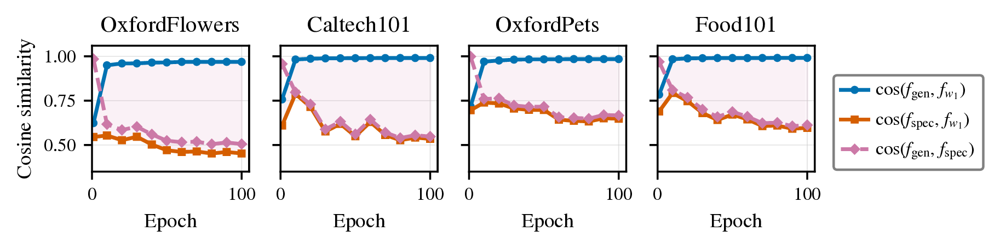

What goes wrong when we fine-tune CLIP's prompt?
Base accuracy rises by 13 points and novel accuracy falls by 11, so the harmonic mean does not move.
| Zero-shot CLIP | CoOp (learned prompt) | |
|---|---|---|
| Base classes (trained on) | 69.3 | 82.7+13.4 |
| Novel classes (never seen) | 74.2 | 63.2−11.0 |
| Harmonic mean | 71.7 | 71.7 |
The setting
CLIP stays frozen; only a few context vectors in the text prompt are learned (4 × 512 ≈ 2K parameters).
Train on base classes, test on base and novel classes. The harmonic mean HM = 2BN/(B+N) rewards only methods that do well on both.
The prompt drifts toward directions that separate the base classes, and CLIP's knowledge of the novel classes erodes.
Would a better regularizer fix it?
No. Across seven single-prompt variants, the best gain is +0.40 HM, about what retuning λ gives, and no variant clearly gains on both datasets.
Current methods add an anchor to CLIP's zero-shot text features (cosine anchors, self-distillation, or a low-loss path as in MergeTune, our starting point). We swapped that anchor for seven alternatives, each at the best point of its own sweep.
Seed 1. What helps one dataset often hurts the other: zero-shot distillation is +0.40 on Caltech101 and −2.37 on Flowers102. Changing the loss is not the lever.
Then where does the ceiling come from?
From the parameterization: one shared prompt receives two opposing gradients.
Every step that lowers one objective raises the other: the solution is Pareto-stationary. Changing λ slides it along the trade-off, never beyond it.
γ < 0 on all 8 dataset–baseline pairs; ≈ −0.95 on Flowers. The conflict is in gradient directions, not class semantics.
What if each objective had its own prompt?
Give specialization and generalization one prompt each and join them with an LMC corridor in text-feature space. Train the whole segment, deploy one point.
Why feature space?
Logits are linear in the text features, so every point of the segment is a classifier. The text encoder is non-linear: mixing the prompts themselves would not trace this segment.
Training
A fresh α ~ U[0,1] at every step keeps the loss low along the whole segment, not only at its ends.
Inference
Merge once at α = 0.20 (chosen on 2 dev datasets, fixed for all). One text-feature matrix: DMC adds ~2K parameters and no inference overhead.
How is DMC trained?
Both prompts start from the same fine-tuned checkpoint. Each sees only its own objective; the corridor is the only term that couples them.
Cross-entropy on base classes, free of any pull toward zero-shot features, plus a light Visual Anchor.
Only the cosine anchor R = 1 − (1/C) Σc cos(fc, fzs,c). Learnable, so it keeps useful task structure.
f̃(α) = ℓ2(fgen + α(fspec − fgen)): every classifier on the segment must have low loss.
λgen = 8, β = 4, λVA = 0.5, τ = 2, fixed across all experiments; other settings follow MergeTune.
Visual Anchor: keep CLIP's class similarities
Cross-entropy alone erases the small similarities CLIP encodes between related classes (a rose looks a bit like a peony). VA matches CLIP's class-similarity distribution on each training image, across two augmented views, without using the label. With one view it is exactly a KL divergence to CLIP's pretrained distribution. In our ablations it is a small refinement.
Which regularizers can transfer to unseen classes?
Class-permutation invariance (CPI): a regularizer that cannot tell which class is which. A class-aware one writes base-class identity into the prompt; under idealized assumptions, Fano's inequality turns that into a lower bound on the novel-accuracy drop.
CPI is necessary, not sufficient. Both DMC regularizers satisfy it; Fisher-weighted cosine and prompt-space EWC do not.
Does it actually work?
On both prompt-tuning bases, yes: average HM 76.45 → 77.23 (CoOp) and 76.43 → 76.76 (KgCoOp) over single-prompt MergeTune, 3-seed means.
Where does the corridor end up?

Does DMC move the frontier, or slide along it?

Does it hold across 11 datasets?
ΔHM of DMC over single-prompt MergeTune, same pipeline, 3-seed mean, α = 0.20. Hover a cell for absolute numbers.
| IN | Cal | Pets | Cars | Flo | Food | Air | SUN | DTD | Euro | UCF | Avg | |
|---|---|---|---|---|---|---|---|---|---|---|---|---|
| CoOp | +0.01 | +0.14 | -0.09 | +1.83 | +0.55 | +0.08 | +1.90 | +0.90 | -0.73 | +2.30 | +1.65 | +0.78 |
| KgCoOp | +0.27 | +0.17 | -0.05 | +0.48 | +0.28 | +0.11 | -0.93 | +0.82 | +1.68 | -0.06 | +0.82 | +0.33 |
Full HM table (11 datasets)
| Method | Avg | IN | Cal | Pets | Cars | Flo | Food | Air | SUN | DTD | Euro | UCF |
|---|---|---|---|---|---|---|---|---|---|---|---|---|
| CLIP | 71.70 | 70.22 | 95.40 | 94.12 | 68.65 | 74.83 | 90.66 | 31.09 | 72.23 | 56.37 | 60.03 | 73.85 |
| CoOp | 71.66 | 71.92 | 93.73 | 94.47 | 68.13 | 74.06 | 85.19 | 28.75 | 72.51 | 54.24 | 68.69 | 67.46 |
| KgCoOp | 77.01 | 72.78 | 96.03 | 96.18 | 73.36 | 83.65 | 91.10 | 34.83 | 78.36 | 64.35 | 73.48 | 79.66 |
| MaPLe | 78.55 | 73.47 | 96.02 | 96.58 | 73.47 | 82.56 | 91.38 | 36.50 | 79.75 | 68.16 | 82.35 | 80.77 |
| PromptSRC | 79.97 | 74.01 | 96.02 | 96.30 | 76.58 | 85.95 | 91.10 | 40.15 | 80.52 | 71.75 | 82.32 | 82.74 |
| MMA | 79.87 | 74.02 | 96.15 | 96.72 | 75.70 | 85.48 | 90.71 | 38.33 | 80.38 | 73.38 | 83.87 | 82.20 |
| CoOp + TIES | 66.32 | 65.60 | 92.50 | 92.56 | 60.56 | 69.27 | 88.02 | 29.54 | 62.70 | 48.40 | 58.40 | 58.30 |
| CoOp + DARE | 70.59 | 68.93 | 93.67 | 94.84 | 64.57 | 74.92 | 87.50 | 31.03 | 66.47 | 57.04 | 67.39 | 66.28 |
| CoOp + MergeTune | 76.45 | 72.89 | 96.27 | 96.13 | 73.38 | 83.92 | 91.05 | 33.33 | 77.85 | 64.26 | 73.45 | 78.42 |
| CoOp + DMC (ours) | 77.23 | 72.90 | 96.41 | 96.04 | 75.21 | 84.47 | 91.13 | 35.23 | 78.75 | 63.53 | 75.75 | 80.07 |
| KgCoOp + TIES | 72.56 | 70.93 | 95.83 | 95.23 | 69.73 | 73.39 | 90.91 | 29.86 | 73.46 | 56.93 | 67.02 | 74.18 |
| KgCoOp + DARE | 75.17 | 71.78 | 95.97 | 94.73 | 70.33 | 79.33 | 91.02 | 31.85 | 76.12 | 62.01 | 72.19 | 78.71 |
| KgCoOp + MergeTune | 76.43 | 72.82 | 95.94 | 96.28 | 74.90 | 83.39 | 91.08 | 34.10 | 78.03 | 62.66 | 73.44 | 78.08 |
| KgCoOp + DMC (ours) | 76.76 | 73.09 | 96.11 | 96.23 | 75.38 | 83.67 | 91.19 | 33.17 | 78.85 | 64.34 | 73.38 | 78.90 |
| MMA + TIES | 69.41 | 69.66 | 93.77 | 92.17 | 65.08 | 72.07 | 89.31 | 28.65 | 67.56 | 51.63 | 66.80 | 65.60 |
| MMA + DARE | 71.81 | 70.27 | 93.70 | 92.96 | 68.01 | 73.92 | 88.72 | 29.25 | 72.02 | 57.74 | 70.17 | 70.78 |
| MMA + MergeTune | 72.58 | 73.15 | 95.75 | 93.22 | 70.16 | 75.22 | 90.18 | 32.72 | 76.70 | 58.07 | 59.57 | 73.59 |
| MMA + DMC (ours) | 73.16 | 72.90 | 95.74 | 93.38 | 70.51 | 76.37 | 90.33 | 33.10 | 77.12 | 59.62 | 60.57 | 75.11 |
CLIP, CoOp, KgCoOp, MaPLe, PromptSRC and MMA rows are published single-run numbers. MergeTune and DMC rows are our 3-seed means at α = 0.20.
Is the gain just extra parameters?
No. A single prompt with twice DMC's parameters still trails it on all four datasets.
CoOp with nctx ∈ {4, 8, 16}, 3 seeds each. Longer contexts do not reliably help; the 8K prompt is also much noisier across seeds (σ = 9.5 on EuroSAT).
Is it just having two prompts?
No. Without the anchor the two prompts collapse into one and DMC falls below MergeTune.
Flowers102, HM, 3 seeds, matched β; axis starts at 76. DMC w/o R: cos(fgen, fspec) = 0.99. VA is a small refinement (+0.42 here, mixed on other datasets). Replacing the learned cgen with frozen zero-shot features costs up to 7.4 HM (EuroSAT).
When does DMC not help?
When the two endpoints collapse. If fgen ≈ fspec, every point on the corridor is the same classifier: the corridor is a point.
Per-dataset values
| Dataset | CoOp + DMC | KgCoOp + DMC | MMA + DMC |
|---|---|---|---|
| Caltech101 | 0.608 | 0.919 | 1.000 |
| OxfordPets | 0.785 | 0.971 | 1.000 |
| StanfordCars | 0.673 | 0.701 | 0.999 |
| Flowers102 | 0.542 | 0.606 | 0.997 |
| Food101 | 0.741 | 0.987 | 0.999 |
| FGVCAircraft | 0.514 | 0.521 | 1.000 |
| SUN397 | 0.720 | 0.888 | 0.940 |
| DTD | 0.377 | 0.348 | 1.000 |
| EuroSAT | 0.490 | 0.684 | 1.000 |
| UCF101 | 0.550 | 0.561 | 1.000 |
| Average | 0.600 | 0.719 | 0.993 |
MMA is a scope limitation
With MMA's small adapter, the endpoints coincide (cos 0.993; SUN397 is the only dataset below 0.99). MMA + DMC still edges out MMA + MergeTune (73.16 vs 72.58 HM), but both trail the published MMA.
Mechanism, not correlation:
- Rerunning the component ablation on MMA reverses every gain seen on CoOp.
- Text-encoder LoRA (rank 8, 16) keeps the endpoints apart on Flowers.
Separation is necessary, not sufficient: checking cos(fgen, fspec) at convergence flags base methods where DMC cannot help.

How to cite
@inproceedings{marouf2026dmc,
title = {Decoupled Mode Connectivity for Base-to-Novel
Generalization in Vision-Language Models},
author = {Marouf, Imad Eddine and Oublal, Khalid and
Tartaglione, Enzo and Lathuili{\`e}re, St{\'e}phane},
booktitle = {Advances in Neural Information Processing Systems (NeurIPS)},
year = {2026}
}